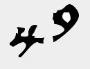
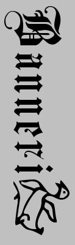
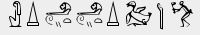

|  | ||
| Etusivu // Anime // Leffat // Rahna // Uniblog // Linkit | ||
|
2007 Elokuu Syyskuu Lokakuu Marraskuu Joulukuu |
UniblogValitse aika vasemmalta. Olemme henkilöautossa, jossa on 3 henkilöä minun lisäkseni. Ihmettelen että miksi minun nimeni ja tietoni on raaputettu oveen. Kukaan ei tiennyt, mutta minusta tuntui niinkun olisin ollut samassa tilanteessa aiemmin. Unessa oli useita eri tyyppejä / paikkoja joihin jokaiseen liittyi erilainen tarina. Unessa kerkesimme vain ensimmäiseen paikkaan, ja siihen liittyi sotaa. Palasimme aina ajassa taaksepäin ja elimme saman hetken uudelleen. Jostakin syystä muistin aiempia tapahtumia, olin kirjottanut omat tietonikin autoon, että tietäisin seuraavalla kerralla olleeni autossa jo aiemmin. |
 |
|  | ||